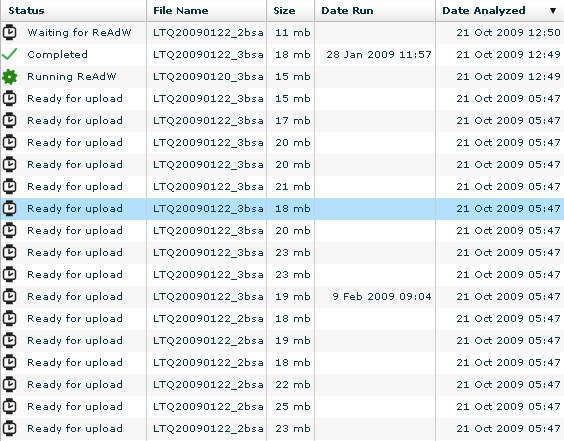

Loading your RAW files into MassQC is a simple process. These files must have been generated by a Thermo LTQ Series mass spectrometer for them to work in MassQC .

To select files to load into MassQC , you simply click the button in the picture above and a standard file directory dialogue box will appear:

Please note: it is very important that you load at least 25 Quality Control Standard Thermo RAW Data Dependent MS/MS files . If you load less than 25 files , the ranges in MassQC will not be computed. Once you have highlighted your samples and clicked Open , your data will begin going through the MassQC pipeline:

After your files are done, you can click the Dashboard or Control Charts tabs and view your data in MassQC ! If you would like to see what happens to your data behind the scenes, click here .
PLEASE NOTE: If you close your browser or log out while RAW files are being uploaded to the MassQC server , these files will not be uploaded to the server. Until they are uploaded to the server, remain logged in to MassQC . Once the files have been successfully uploaded to the MassQC server and they are in queue for ReAdW , OMSSA or SpectraST , or MassQC metric analysis, you can log out or close the browser.
| < Previous | Next > |
If you have questions, comments and/or insights about MassQC , you can share them on the MassQC Users Forum .